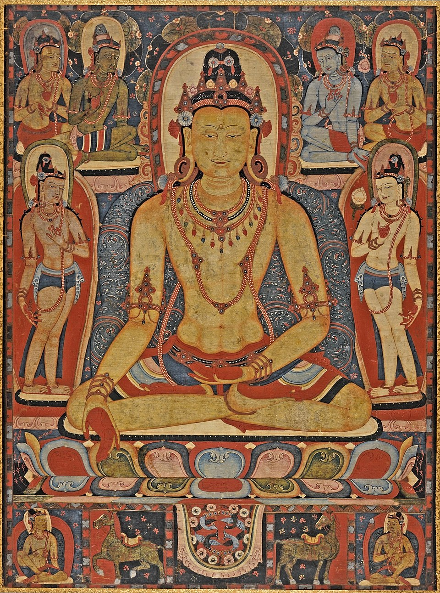

"The Jina Buddha Ratnasambhava" (1150–1225), do Tibete Central, é uma pintura religiosa budista feita em um mosteiro Kadampa. Representa o Buda Ratnasambhava com gestos simbólicos e elementos sagrados, refletindo a busca espiritual pela sabedoria, generosidade e equilíbrio interior.

Comentário
Creditos reservados ao Leonardo, Vinicius, Ryan e giovanny